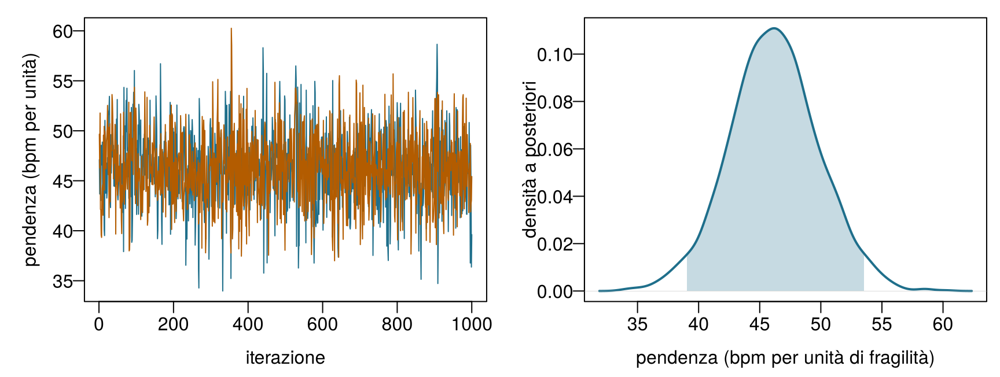
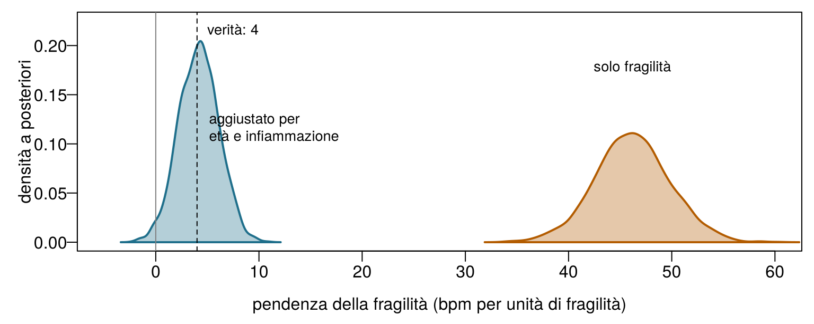

icu8 = FileAttachment("data/icu_aki.csv").csv({typed: true})
akiD = icu8.filter(d => d.site === "ICU_D").map(d => d.delta_creatinine_48h >= 0.3 ? 1 : 0)
viewof m0 = Inputs.range([0.05, 0.95], {value: 0.5, step: 0.01, label: "Media a priori"})
viewof s0 = Inputs.range([2, 300], {value: 2, step: 1, label: "Forza a priori (pazienti immaginari)"})
viewof nD = Inputs.range([0, 313], {value: 10, step: 1, label: "Pazienti di ICU_D osservati, n"})8 Apprendimento bayesiano e incertezza predittiva
Una terapia intensiva appena aperta ha ricoverato i suoi primi 10 pazienti; 2 hanno sviluppato un AKI. Prima dell’apertura, Emma pensava che il tasso di AKI del reparto sarebbe stato intorno al 60 %, e ne era sicura come se avesse già visto 10 pazienti, 6 dei quali con AKI. Tratta la sua convinzione come 10 pazienti immaginari, aggiungi i 10 reali e calcola che cosa dovrebbe pensare adesso. Puoi usare i decimali.
| Domanda | La tua risposta |
|---|---|
| Pazienti con AKI, immaginari più reali | |
| Pazienti in totale, immaginari più reali | |
| Stima aggiornata di Emma del tasso di AKI (una proporzione) | |
| Se la sua convinzione fosse valsa 100 pazienti immaginari (60 con AKI), la stima aggiornata sarebbe… |
Come usare questo capitolo
Inizi da qui?
Questo capitolo riprende alcune idee dai capitoli precedenti. Una riga per ciascuna:
- Modelli e decisioni. Un modello (Definizione 1.3) trasforma i dati in informazione; una decisione
- combina questa informazione con dei valori. Con i punteggi usati nel Capitolo 1, il bundle nefroprotettivo è la scelta migliore ogni volta che la probabilità di AKI supera la soglia \(t = 0{,}25\) (Sezione 1.5).
- Probabilità, verosimiglianza e teorema di Bayes (Capitolo 2). La verosimiglianza \(L(\theta)\) misura quanto bene ciascun valore di un parametro \(\theta\) spiega i dati; il teorema di Bayes trasforma una distribuzione a priori in una a posteriori: a posteriori ∝ verosimiglianza × a priori. La soglia per agire è \(t = C_{\text{FP}}/(C_{\text{FP}} + C_{\text{FN}})\), fissata dalle perdite dei due tipi di errore.
- Insiemi di addestramento e di test (Capitolo 3). I modelli si giudicano su pazienti che non hanno visto; il Reparto 7 usa la suddivisione comune del libro (1.000 pazienti di addestramento e 250 di test). La radice dell’errore quadratico medio (RMSE) e l’errore assoluto medio (MAE) misurano gli errori numerici.
- Regressione lineare e logistica (Capitolo 4, Capitolo 5). Un modello lineare prevede \(\beta_0 + \beta_1 x_1 + \dots\); un modello logistico fa passare la stessa somma attraverso la funzione logistica, a forma di S, per ottenere una probabilità. Nel Capitolo 4 hai incontrato anche gli intervalli di confidenza e gli intervalli di previsione.
- Alberi e foreste (Capitolo 6). Le foreste casuali e il boosting sommano molti alberi; prevedono bene, ma danno un singolo numero senza alcuna indicazione di incertezza.
| Esempio | Chi o che cosa | Esito | Volti che incontrerai |
|---|---|---|---|
| 1 Terapia intensiva del Reparto 7 | 1.250 pazienti di terapia intensiva in 4 ospedali | variazione della creatinina in 48 h (danno renale acuto se ≥ 0,3 mg/dL) | Aoife (71 anni, sepsi, rischio borderline), Tomás (54 anni, rischio basso), Priya (38 anni, rischio alto); la dott.ssa Emma Walsh; Seán, il farmacista |
| 2 Studio ONCO-1 | 1.000 pazienti randomizzati a ricevere o meno la chemioterapia | riduzione del tumore (%) | i pazienti #0042 e #0917 |
| 3 HomeBeat | 500 persone che indossano uno smartwatch a casa | punteggio di stress, evento di peggioramento | Lena |
| 4 CellWorks | 420 lotti di produzione di una terapia cellulare | punteggio di potenza | il lotto CW-118 |
Tutti e quattro i dataset sono simulati e si possono scaricare dall’appendice sui dati. La presentazione completa si trova in Sezione 1.1.
Questo capitolo insegna ai modelli a dichiarare la propria incertezza. Comprende nove sezioni e un Laboratorio, sei verifiche rapide, tre widget “Prova tu”, una sfida e tre missioni di programmazione in R e Python. Calcola circa due ore. I modelli più pesanti (i campionatori di Stan e il BART) sono stati eseguiti una volta sola, fuori dal browser, e le loro estrazioni vengono caricate qui; nel browser usi formule esatte e griglie, che per i modelli più semplici danno le stesse risposte.
La notazione in sintesi (solo per consultazione)
| Simbolo | Significato | Sezione |
|---|---|---|
| \(\theta\) | un parametro (qui un tasso di AKI, una media o un coefficiente) | Sezione 8.1 |
| \(p(\theta)\), \(p(\theta \mid \mathbf{y})\) | distribuzione a priori e a posteriori di \(\theta\) | Sezione 8.1 |
| \(\text{Beta}(a, b)\) | distribuzione beta; \(a\) e \(b\) fanno da conteggi a priori di “sì” e “no” | Sezione 8.2 |
| \(\beta_0, \beta_1, \sigma\) | intercetta, pendenza e deviazione standard residua di una regressione | Sezione 8.3 |
| \(\theta^{(s)}\), \(S\) | la \(s\)-esima di \(S\) estrazioni dalla distribuzione a posteriori | Sezione 8.4 |
| \(\widehat{R}\), ESS | R-hat e dimensione campionaria effettiva, due diagnostiche MCMC | Sezione 8.4 |
| \(\tilde y\) | un esito futuro di un nuovo paziente | Sezione 8.6 |
| \(m\) | numero di alberi nel BART | Sezione 8.8 |
L’elenco completo si trova nella pagina della notazione.
8.1 Dal teorema di Bayes all’apprendimento bayesiano
Nel Capitolo 2 il teorema di Bayes aggiornava la probabilità di una condizione (fragilità, AKI) non appena arrivava un indizio: una frequenza cardiaca elevata, un esame delle urine positivo. La regola era sempre la stessa, a posteriori ∝ verosimiglianza × a priori. L’apprendimento bayesiano applica esattamente la stessa regola ai parametri di un modello: il tasso di AKI di un ospedale, la frequenza cardiaca media di una popolazione, la pendenza di una retta di regressione (Gelman et al. 2013; McElreath 2020).
Il Capitolo 2 ha presentato anche le due scuole di inferenza. Nella visione frequentista un parametro è una costante fissa e ignota; si calcola un’unica stima migliore (spesso per massima verosimiglianza) e si descrive come questa stima varierebbe su campioni ripetuti. Nella visione bayesiana i dati, una volta osservati, sono fissi, e ciò su cui siamo incerti è il parametro; questa incertezza si descrive con una distribuzione di probabilità, prima dei dati (la distribuzione a priori) e dopo (la distribuzione a posteriori). Entrambe le visioni usano la stessa verosimiglianza. La differenza sta in ciò che ti permettono di dire: solo la visione bayesiana ti consente di affermare “la probabilità che questo tasso di AKI superi il 60 % è 0,9”, una frase che clinici e dirigenti di solito vogliono sentire (Spiegelhalter, Abrams, e Myles 2004).
Definizione 8.1 (Distribuzione a priori e a posteriori di un parametro) Per un parametro \(\theta\) e dati \(\mathbf{y}\), la distribuzione a priori \(p(\theta)\) descrive ciò che si sa o si suppone su \(\theta\) prima di vedere i dati, e la distribuzione a posteriori descrive ciò che si sa dopo:
\[ p(\theta \mid \mathbf{y}) = \frac{p(\mathbf{y} \mid \theta)\, p(\theta)}{p(\mathbf{y})} \;\propto\; \underbrace{p(\mathbf{y} \mid \theta)}_{\text{verosimiglianza}} \times \underbrace{p(\theta)}_{\text{a priori}} . \]
Il denominatore \(p(\mathbf{y})\) non dipende da \(\theta\); serve solo a far sì che la distribuzione a posteriori abbia integrale 1. Ogni sintesi di cui abbiamo bisogno (una stima migliore, un intervallo, la probabilità che \(\theta\) superi un valore) si legge dalla distribuzione a posteriori (Gelman et al. 2013).
Il ciclo della Figura 8.1 è il modo in cui i clinici ragionano già. Emma ha un’aspettativa su un nuovo paziente prima del primo esame del sangue; ogni risultato la sposta; l’aspettativa spostata è il punto di partenza quando arriva il risultato successivo. Un modello bayesiano fa lo stesso, in modo esplicito e con i numeri. Ne seguono tre conseguenze, e il resto del capitolo le illustra una per una. Con pochi dati, la distribuzione a priori conta e la distribuzione a posteriori è ampia. Con molti dati, la verosimiglianza domina e le risposte bayesiana e frequentista quasi coincidono. E poiché il risultato è un’intera distribuzione, lo si può portare avanti nelle previsioni e nelle decisioni con la sua incertezza intatta.
8.2 Imparare una proporzione: la distribuzione a priori beta
Il modo più rapido per vedere l’apprendimento bayesiano è stimare una singola proporzione. Un dirigente chiede quale sia il tasso di AKI nell’ospedale ICU_D, uno dei quattro ospedali del Reparto 7. Gli altri tre ospedali, insieme, hanno trattato 937 pazienti con un tasso di AKI di 0,55. ICU_D ha i dati di 313 pazienti. Supponiamo di esaminarli uno alla volta, come se stessero arrivando.
All’ingresso del capitolo hai messo insieme pazienti immaginari e reali. È esattamente ciò che fa la distribuzione beta. Una distribuzione a priori \(\text{Beta}(a, b)\) per un tasso di AKI \(\theta\) si comporta come \(a\) pazienti immaginari con AKI e \(b\) senza; la sua media è \(a/(a+b)\) e diventa più stretta man mano che cresce la forza della distribuzione a priori, \(a + b\). Se poi osserviamo \(k\) casi di AKI su \(n\) pazienti reali, la distribuzione a posteriori è di nuovo una distribuzione beta,
\[ \theta \mid \text{dati} \sim \text{Beta}(a + k,\; b + n - k), \qquad \mathbb{E}[\theta \mid \text{dati}] = \frac{a + k}{a + b + n} . \qquad(8.1)\]
La media a posteriori è un compromesso tra la media a priori \(a/(a+b)\) e la proporzione osservata \(k/n\), pesato dalla forza della distribuzione a priori, \(a + b\), e dalla numerosità del campione, \(n\). Quando la distribuzione a posteriori appartiene alla stessa famiglia della distribuzione a priori, quest’ultima si dice coniugata; le distribuzioni a priori coniugate riducono l’aggiornamento bayesiano a una somma di conteggi (Gelman et al. 2013, cap. 2).
Definizione 8.2 (Scegliere la distribuzione a priori; distribuzione a priori coniugata) Una distribuzione a priori è informativa quando codifica conoscenze reali (studi precedenti, altri ospedali, il parere di esperti), debolmente informativa quando si limita a escludere valori non plausibili (un tasso di AKI è compreso tra 0 e 1; una pendenza di 1.000 bpm per unità di fragilità è assurda) e piatta o vaga quando tratta tutti i valori come quasi ugualmente plausibili (Gelman et al. 2008). Una distribuzione a priori è coniugata a una verosimiglianza quando la distribuzione a posteriori ha la stessa forma della distribuzione a priori, come accade alla distribuzione a priori beta per una verosimiglianza binomiale. Qualunque sia la scelta, va dichiarata, giustificata e verificata con un’analisi di sensibilità: stima di nuovo il modello con un’altra distribuzione a priori ragionevole e guarda se la conclusione cambia (Spiegelhalter, Abrams, e Myles 2004).
Per ICU_D, una distribuzione a priori informativa naturale prende in prestito dagli altri tre ospedali: media 0,55 e forza di 100 pazienti, cioè \(\text{Beta}(55, 45)\). Dopo i primi 20 pazienti di ICU_D (12 con AKI), la Equazione 8.1 dà una media a posteriori di 0,558, con un intervallo al 95 % da 0,47 a 0,65. Con una distribuzione a priori piatta, \(\text{Beta}(1, 1)\), gli stessi 20 pazienti danno un intervallo da 0,38 a 0,78: la conoscenza presa in prestito vale moltissimo quando i dati sono pochi. Dopo tutti i 313 pazienti (212 con AKI), la distribuzione a priori informativa dà 0,646 (0,60–0,69), vicino alla proporzione osservata 0,677: i dati hanno preso il sopravvento. Prova tu.
A priori, verosimiglianza, a posteriori. Le curve descrivono ciò che si pensa del tasso di AKI di ICU_D. Grigio: la distribuzione a priori. Arancione: la verosimiglianza dei pazienti osservati finora, riscalata alla stessa area. Blu: la distribuzione a posteriori, che è (proporzionale a) il loro prodotto. I pazienti vengono presi nell’ordine del file di dati. Obiettivo: imposta una distribuzione a priori scettica pari al tasso degli altri ospedali (media a priori 0,55), con una forza di almeno 100 pazienti, poi trova quanti pazienti di ICU_D servono perché l’intervallo di credibilità al 95 % non contenga più 0,55.
Nota tre cose nel widget. Con \(n = 0\) la distribuzione a posteriori è la distribuzione a priori: senza dati, nessun apprendimento. Con una distribuzione a priori piatta (media 0,5, forza 2) la distribuzione a posteriori segue quasi esattamente la verosimiglianza, e il suo picco è la stima di massima verosimiglianza \(k/n\) del Capitolo 2. E per quanto forte sia la distribuzione a priori, dati sufficienti finiscono per avere la meglio, anche se una distribuzione a priori che vale centinaia di pazienti ha bisogno di centinaia di pazienti per essere superata. Ecco perché una distribuzione a priori forte deve essere giustificata da evidenze di peso equivalente.
Per i curiosi: imparare una media, e perché la distribuzione a posteriori è una media pesata
La stessa logica vale per la media \(\mu\) di una misura come la frequenza cardiaca a riposo, modellata come normale con una deviazione standard \(\sigma\) che trattiamo come nota. Con una distribuzione a priori normale \(\mu \sim \mathcal{N}(m, s^2)\) e \(n\) osservazioni con media \(\bar y\), anche la distribuzione a posteriori è normale, con
\[ \mathbb{E}[\mu \mid \mathbf{y}] = \frac{m/s^2 + n\bar y/\sigma^2}{1/s^2 + n/\sigma^2}, \qquad \operatorname{Var}(\mu \mid \mathbf{y}) = \frac{1}{1/s^2 + n/\sigma^2} . \]
L’inverso di una varianza si chiama precisione. La media a posteriori è una media della media a priori e della media dei dati pesata con le precisioni, e la precisione a posteriori è la somma delle due precisioni: l’informazione si somma (Gelman et al. 2013, ch. 2). Per i primi 10 partecipanti di HomeBeat (media 73,6 bpm), una distribuzione a priori \(\mathcal{N}(70, 10^2)\) e \(\sigma = 12\) bpm danno una media a posteriori di 73,1 bpm con deviazione standard di 3,5 bpm; i dati ricevono un peso di 0,87 e la distribuzione a priori di 0,13. Con tutti i 500 partecipanti, il peso della distribuzione a priori scenderebbe sotto 0,01.
Due analiste stimano il tasso di AKI di ICU_D. Una usa una distribuzione a priori piatta; l’altra prende in prestito dagli altri ospedali una distribuzione a priori che vale 100 pazienti. Quale affermazione è corretta?
Aggiorna il tasso di ICU_D sommando conteggi. La distribuzione a priori è \(\text{Beta}(55, 45)\). Il codice conta i casi di AKI k tra i primi n = 20 pazienti di ICU_D e restituisce l’intervallo di credibilità al 95 % della distribuzione a posteriori con qbeta(), la funzione quantile della distribuzione beta. Completa lo spazio vuoto in modo che il secondo parametro di forma conti i pazienti senza AKI.
La distribuzione a posteriori è \(\text{Beta}(a + k,\; b + n - k)\).
qbeta(c(0.025, 0.975), a + k, b + n - k)La distribuzione a posteriori è \(\text{Beta}(a + k,\; b + n - k)\).
beta.ppf([0.025, 0.975], a + k, b + n - k)8.3 Regressione lineare bayesiana
Una proporzione ha un solo parametro. Una regressione ne ha diversi, e l’apprendimento bayesiano li tratta tutti come incerti contemporaneamente. Torniamo allo studio HomeBeat e chiediamoci come la frequenza cardiaca a riposo sia legata alla fragilità: un indice di fragilità compreso tra 0 (in buona forma) e circa 0,8 (molto fragile), registrato all’arruolamento. Il modello più semplice è la retta del Capitolo 4:
\[ \text{FC}_i \sim \mathcal{N}\!\left(\beta_0 + \beta_1\, \text{fragilità}_i,\; \sigma^2\right), \qquad i = 1, \dots, 500 . \qquad(8.2)\]
Leggila così: la frequenza cardiaca a riposo del partecipante \(i\) è estratta da una distribuzione normale la cui media sta sulla retta \(\beta_0 + \beta_1\,\text{fragilità}_i\) e la cui deviazione standard, \(\sigma\), descrive la dispersione attorno alla retta. I minimi quadrati (Capitolo 4) danno un’unica pendenza, \(\hat\beta_1 =\) 47,6 bpm per unità di fragilità, con un intervallo di confidenza al 95 % da 40,4 a 54,8. Un modello bayesiano aggiunge una distribuzione a priori per ogni incognita:
\[ \beta_0 \sim \mathcal{N}(60, 20^2), \qquad \beta_1 \sim \mathcal{N}(0, 20^2), \qquad \sigma \sim \text{semi-normale}(10) . \qquad(8.3)\]
Sono distribuzioni a priori deboli. Quella dell’intercetta dice che la frequenza cardiaca di un partecipante con fragilità media è probabilmente compresa tra 20 e 100 bpm.1 Quella della pendenza è centrata sullo zero (nessuna associazione) e ammette associazioni di entrambi i segni fino a circa 40 bpm per unità di fragilità. La distribuzione a priori semi-normale per \(\sigma\), una distribuzione normale ripiegata sullo zero, dice che la dispersione attorno alla retta è positiva e probabilmente inferiore a 20 bpm (Gelman 2006). Il teorema di Bayes dà allora la distribuzione a posteriori congiunta delle tre incognite,
1 Il pacchetto R usato più avanti, rstanarm, applica la distribuzione a priori dell’intercetta al valore della retta in corrispondenza della media dei predittori, non a fragilità = 0, perché quell’intercetta è molto meno incerta e più facile da interpretare. Poi riporta l’intercetta sulla scala consueta.
\[ p(\beta_0, \beta_1, \sigma \mid \mathbf{y}) \;\propto\; \prod_{i=1}^{500} \mathcal{N}\!\left(\text{FC}_i \mid \beta_0 + \beta_1\,\text{fragilità}_i, \sigma^2\right) \; p(\beta_0)\, p(\beta_1)\, p(\sigma) . \]
Definizione 8.3 (Regressione bayesiana) Una regressione bayesiana è un modello di regressione (lineare, logistica o di altro tipo) in cui i coefficienti e qualsiasi altra incognita (come \(\sigma\)) ricevono distribuzioni a priori, e il risultato della stima è la loro distribuzione a posteriori congiunta anziché un unico insieme di stime. Le sintesi puntuali (media o mediana a posteriori), gli intervalli e probabilità come \(P(\beta_1 > 0 \mid \text{dati})\) si leggono tutti da questa distribuzione a posteriori (Gelman et al. 2013, cap. 14).
Con tre incognite non esiste una formula semplice per la distribuzione a posteriori. In pratica la si calcola per campionamento, con software come Stan (Carpenter et al. 2017) e la sua interfaccia R, rstanarm (Goodrich et al. 2024). Questo è il codice che ha prodotto le estrazioni usate in questo capitolo; gira in pochi secondi su un portatile, ma non nel browser, quindi i suoi risultati vengono caricati da un file.
library(rstanarm)
fit_simple <- stan_glm(
resting_hr ~ frailty, data = hb, family = gaussian(),
prior_intercept = normal(60, 20, autoscale = FALSE),
prior = normal(0, 20, autoscale = FALSE),
prior_aux = normal(0, 10, autoscale = FALSE), # sigma: una semi-normale(10)
chains = 2, iter = 2000, seed = 2026)autoscale = FALSE fa usare a rstanarm esattamente le distribuzioni a priori scritte sopra, invece di riscalarle in base alla variabilità dei dati, come fa per impostazione predefinita. Il risultato è una tabella di 2.000 estrazioni a posteriori: 2.000 combinazioni plausibili di \((\beta_0, \beta_1, \sigma)\), ciascuna compatibile con i dati e con le distribuzioni a priori. Le sintesi sono semplicemente sintesi delle estrazioni (Tabella 8.1).
| Parametro | Media a posteriori | DS a posteriori | Intervallo di credibilità al 95 % |
|---|---|---|---|
| \(\beta_0\) (intercetta, bpm) | 51,6 | 1,51 | 48,6 – 54,6 |
| \(\beta_1\) (bpm per unità di fragilità) | 46,2 | 3,64 | 39,0 – 53,5 |
| \(\sigma\) (bpm) | 11,2 | 0,35 | 10,5 – 11,9 |
La media a posteriori della pendenza, 46,2, è leggermente più vicina allo zero della pendenza dei minimi quadrati, 47,6: la distribuzione a priori, centrata sullo zero, tira un po’. È la stessa contrazione (shrinkage) che hai visto con la regressione ridge nel Capitolo 4: con una distribuzione a priori normale centrata sullo zero, il valore più probabile dei coefficienti è esattamente una stima ridge (Hastie, Tibshirani, e Friedman 2009, sez. 3.4). Nota anche che la distribuzione a posteriori è centrata oltre l’intervallo di pendenze che la distribuzione a priori considerava più plausibili (±40): 500 partecipanti bastano a superare una distribuzione a priori debole, al prezzo di una piccola attrazione verso lo zero. Con 30 partecipanti l’attrazione sarebbe molto più forte.
Puoi calcolare tu stesso questa distribuzione a posteriori, senza Stan, con la forza bruta: prova una griglia fitta di pendenze candidate e valuta verosimiglianza × a priori in ciascuna.
Una distribuzione a posteriori su una griglia. Per mantenere la griglia unidimensionale, il codice tiene fisse l’intercetta (alla frequenza cardiaca media, dopo aver centrato la fragilità) e \(\sigma\), ed esplora solo la pendenza \(\beta_1\). Calcola la log-verosimiglianza e il logaritmo della distribuzione a priori per 1.001 pendenze candidate. Completa lo spazio vuoto in modo che il logaritmo della distribuzione a posteriori sia la log-verosimiglianza più il logaritmo della distribuzione a priori; il logaritmo trasforma “verosimiglianza × a priori” in una somma. L’ultima riga restituisce la media a posteriori della pendenza.
Il vettore dei valori del logaritmo della distribuzione a priori è già nel codice, una riga sopra lo spazio vuoto.
logpost <- loglik + logpriorL’array dei valori del logaritmo della distribuzione a priori è già nel codice, una riga sopra lo spazio vuoto.
logpost = loglik + logpriorUna griglia funziona con uno o due parametri. Con dieci parametri e 100 punti di griglia ciascuno servirebbero \(100^{10}\) valutazioni, più di quante qualsiasi computer possa gestire. Ecco perché ci serve un metodo più furbo.
8.4 Come si calcola la distribuzione a posteriori: MCMC
L’idea alla base del calcolo bayesiano moderno è sostituire una formula con un campione. Se potessimo estrarre migliaia di valori \(\theta^{(1)}, \dots, \theta^{(S)}\) dalla distribuzione a posteriori, ogni domanda diventerebbe un conteggio: la media a posteriori è la media delle estrazioni, un intervallo al 95 % va dal 2,5° al 97,5° percentile delle estrazioni, e \(P(\beta_1 > 0 \mid \text{dati})\) è la proporzione di estrazioni sopra lo zero. È l’idea del Monte Carlo, che prende il nome dal casinò (Metropolis e Ulam 1949).
La difficoltà è ottenere le estrazioni quando la distribuzione a posteriori è nota solo a meno della costante \(p(\mathbf{y})\). Il Monte Carlo basato su catene di Markov (MCMC, Markov chain Monte Carlo) la risolve con una passeggiata aleatoria. Immagina un escursionista sul paesaggio della distribuzione a posteriori. A ogni passo l’escursionista propone uno spostamento verso un punto vicino; gli spostamenti in salita (verso valori più plausibili) vengono sempre accettati, quelli in discesa solo a volte, con una probabilità pari al rapporto tra le due altezze. Serve solo quel rapporto, quindi la costante ignota si semplifica. Dopo un po’, l’escursionista visita ogni regione del paesaggio in proporzione alla sua probabilità a posteriori. È l’algoritmo di Metropolis (Metropolis et al. 1953; Hastings 1970). Stan usa un parente più efficiente, il Monte Carlo hamiltoniano con il No-U-Turn sampler, che sfrutta la pendenza del paesaggio per fare passi lunghi e ben mirati invece di passi brevi e casuali (Neal 2011; Hoffman e Gelman 2014; Carpenter et al. 2017).
Definizione 8.4 (Monte Carlo basato su catene di Markov (MCMC); grafico delle tracce, R-hat, dimensione campionaria effettiva) L’MCMC produce una sequenza di estrazioni (una catena) la cui distribuzione si avvicina alla distribuzione a posteriori. La prima parte di ogni catena, il riscaldamento (warm-up), viene scartata. Si eseguono diverse catene da punti di partenza diversi e se ne verifica l’accordo con tre diagnostiche standard (Gelman e Rubin 1992; Vehtari et al. 2021; Gabry et al. 2019):
- un grafico delle tracce (trace plot) mostra il valore di ogni catena in funzione dell’iterazione; catene sane si sovrappongono e sembrano un “bruco peloso”, senza tendenze e senza tratti piatti;
- l’R-hat (\(\widehat{R}\)) confronta la variabilità tra le catene con quella all’interno di ciascuna; valori vicini a 1 (nella pratica attuale, sotto 1,01) suggeriscono che le catene sono d’accordo;
- la dimensione campionaria effettiva (ESS, effective sample size) è il numero di estrazioni indipendenti che conterrebbero la stessa informazione delle estrazioni correlate delle catene; qualche centinaio di solito basta per medie e intervalli al 95 %.
Le diagnostiche sono una questione di occhio. I quattro pannelli della Figura 8.2 mostrano ciascuno tre catene per lo stesso parametro (la pendenza della fragilità della Equazione 8.2), prodotte da quattro campionatori regolati in modo diverso. Solo di uno ci si può fidare.
![Quattro pannelli con tre catene colorate ciascuno. Pannello A: le tre catene partono molto distanti, vicino a 100, 50 e meno 10, e si avvicinano lentamente senza incontrarsi. Pannello B: le catene salgono e scendono lentamente tra 44 e 52, ciascuna nella propria regione per lunghi tratti. Pannello C: le tre catene si sovrappongono completamente e oscillano rapidamente tra circa 38 e 54, come un bruco peloso. Pannello D: le catene sono linee piatte per lunghi tratti, con solo pochi salti improvvisi.](ch08.it_files/figure-html/fig-ch08-traces-1.png)
Abbina ogni pannello della Figura 8.2 alla sua diagnosi.
- Pannello A Non ancora a convergenza
- Pannello B Mescolamento lento
- Pannello C Affidabile
- Pannello D Bloccato (poche mosse accettate)
Verifica la tua lettura: R-hat e dimensione campionaria effettiva di ogni pannello
| Pannello | R-hat | ESS (bulk) | Campionatore |
|---|---|---|---|
| A | 3,61 | 3 | Metropolis, passi piccoli, partenze disperse, riscaldamento non scartato |
| B | 1,60 | 5 | Metropolis, passi molto piccoli |
| C | 1,00 | 1456 | Stan (No-U-Turn sampler), riscaldamento scartato |
| D | 2,77 | 4 | Metropolis, passi decisamente troppo grandi |
Solo il pannello C supera l’esame: R-hat vicino a 1 e una dimensione campionaria effettiva vicina alle 1.500 estrazioni stesse (Vehtari et al. 2021). Le catene del pannello A non hanno ancora raggiunto la distribuzione a posteriori: scarta più riscaldamento o fai girare più a lungo. Il pannello B si trova nella regione giusta, ma ogni catena la esplora così lentamente che 1.500 estrazioni contengono l’informazione di appena una manciata di estrazioni indipendenti. Il pannello D propone spostamenti così grandi che quasi tutti vengono rifiutati, e le catene restano ferme. Far girare B o D più a lungo alla fine aiuterebbe, ma il vero rimedio è un campionatore regolato meglio, ed è ciò che il riscaldamento di Stan fa automaticamente (Hoffman e Gelman 2014; Carpenter et al. 2017).
La stima reale è sana. Per entrambi i modelli di HomeBeat, ogni parametro ha \(\widehat{R} \le\) 1,006 e un ESS (bulk) di almeno 1586; la Figura 8.3 mostra il grafico delle tracce e la densità a posteriori della pendenza.

Il modello bayesiano di una collega per i punteggi di stress di HomeBeat riporta \(\widehat{R} = 1{,}08\) per un coefficiente e un ESS (bulk) di 40. Che cosa dovrebbe fare prima di leggere il suo intervallo di credibilità?
8.5 Leggere la distribuzione a posteriori: intervalli di credibilità e probabilità di un effetto
Definizione 8.5 (Intervallo di credibilità; probabilità a posteriori di un effetto) Un intervallo di credibilità al 95 % è un intervallo che contiene il 95 % della probabilità a posteriori; la scelta consueta va dal 2,5° al 97,5° percentile delle estrazioni a posteriori. Dati il modello, le distribuzioni a priori e i dati, c’è una probabilità del 95 % che il parametro si trovi al suo interno. La probabilità a posteriori di un effetto, come \(P(\beta_1 > 0 \mid \text{dati})\), è la quota della distribuzione a posteriori sopra lo zero, stimata dalla proporzione di estrazioni sopra lo zero (Gelman et al. 2013).
Un intervallo di confidenza (Capitolo 4) risponde a una domanda diversa (Neyman 1937). Il suo “95 %” descrive la procedura: se lo studio venisse ripetuto molte volte, il 95 % degli intervalli calcolati in questo modo conterrebbe il valore vero. Non dice che questo particolare intervallo contiene il valore con probabilità 0,95, anche se è proprio così che lo si legge molto spesso (Morey et al. 2016). Con distribuzioni a priori deboli e molti dati, i due intervalli di solito sono numericamente vicini (per la pendenza di HomeBeat, 40,4–54,8 contro 39,0–53,5), quindi la differenza pratica sta in ciò che ti è permesso dire.
| Intervallo di credibilità bayesiano | Intervallo di confidenza frequentista | |
|---|---|---|
| Che cosa è trattato come incerto? | Il parametro | L’intervallo (cambia da campione a campione) |
| Che cosa significa “95 %” | \(P(\text{parametro nell'intervallo} \mid \text{dati}) = 0{,}95\) | Il 95 % degli intervalli ottenuti da campioni ripetuti conterrebbe il valore vero |
| Dipende da una distribuzione a priori? | Sì | No |
| Dà \(P(\beta_1 > 0 \mid \text{dati})\)? | Sì, direttamente | No; un valore p è una quantità diversa |
| Rischio principale | Una distribuzione a priori sbagliata e troppo forte | Leggerlo come un’affermazione di probabilità sul parametro |
Nel modello semplice di HomeBeat, tutte le 2.000 estrazioni della pendenza della fragilità sono positive: \(P(\beta_1 > 0 \mid \text{dati}) \approx\) 1,00. Dati questo modello e queste distribuzioni a priori, è praticamente certo che in questa popolazione la frequenza cardiaca a riposo aumenti con la fragilità, di circa 4,6 bpm per ogni 0,1 di fragilità.
8.5.1 Una probabilità vale quanto il suo modello
Ora l’avvertenza importante. HomeBeat è simulato, quindi conosciamo la verità: nel codice che lo ha generato (sim_homebeat.R), la fragilità aumenta la frequenza cardiaca a riposo di 4 bpm per unità (0,4 bpm per ogni 0,1 di fragilità), dieci volte meno di quanto suggerisca il modello qui sopra. Da dove viene il resto? I partecipanti più anziani sono sia più fragili sia hanno frequenze cardiache a riposo più alte, e lo stesso vale per i partecipanti con più infiammazione. Età e infiammazione sono confondenti (Hernán e Robins 2020) (Sezione 1.10): spingono in alto insieme la fragilità e la frequenza cardiaca, e il modello semplice attribuisce alla fragilità il loro effetto. Aggiungerle al modello,
\[ \text{FC}_i \sim \mathcal{N}\!\left(\beta_0 + \beta_1\,\text{fragilità}_i + \beta_2\,\text{età}_i + \beta_3\,\text{infiammazione}_i,\; \sigma^2\right), \]
cambia completamente la risposta (Figura 8.4): la pendenza della fragilità diventa 4,2 bpm per unità (intervallo di credibilità al 95 % da 0,4 a 8,0), vicina al valore vero di 4, e \(P(\beta_1 > 0 \mid \text{dati})\) scende da 1,00 a 0,98.

La lezione non riguarda Bayes, ed è quella che il primo modello di HomeBeat ha quasi nascosto. Ogni probabilità a posteriori è condizionata al modello. Il modello semplice era del tutto sicuro di qualcosa che, come affermazione causale, è sbagliato, perché il modello aveva lasciato fuori i confondenti. Più dati lo avrebbero solo reso ancora più sicuro. I metodi bayesiani quantificano l’incertezza all’interno di un modello; non proteggono da un modello che risponde alla domanda sbagliata (Gelman et al. 2013, cap. 6). Per domande del tipo “che cosa succederebbe se la fragilità cambiasse?”, gli strumenti arrivano nel Capitolo 13.
Il modello semplice riporta \(P(\beta_1 > 0 \mid \text{dati}) \approx 1\) per la fragilità. Quale lettura è corretta?
8.6 Prevedere una persona: la distribuzione predittiva a posteriori
Torniamo a Lena. Il Capitolo 2 ha confrontato la sua frequenza cardiaca a riposo di 88 bpm con tutti i 500 partecipanti e ha trovato che solo il 8 % circa raggiunge valori così alti. Ma Lena ha 72 anni, un indice di fragilità di 0,55 e un punteggio di infiammazione di 4,1. La vera domanda dell’infermiera è se 88 bpm sia insolito per una persona come lei. Un modello può rispondere in due modi diversi, e confonderli è uno degli errori più comuni nel riportare le previsioni.
- Dove si trova la frequenza cardiaca media delle persone come Lena? Per ogni estrazione a posteriori \(s\) del modello aggiustato, calcola il punto sulla superficie di regressione, \(\mu^{(s)} = \beta_0^{(s)} + \beta_1^{(s)}\cdot 0{,}55 + \beta_2^{(s)} \cdot 72 + \beta_3^{(s)} \cdot 4{,}1\). I 2.000 valori di \(\mu^{(s)}\) descrivono la nostra incertezza sulla media: media a posteriori di 85,2 bpm, intervallo di credibilità al 95 % da 84,5 a 86,0 bpm. È stretto, perché 500 partecipanti fissano bene la superficie di regressione.
- Quale valore potrebbe mostrare Lena stessa? Gli individui si disperdono attorno alla media con deviazione standard \(\sigma\). Per ogni estrazione, simula una nuova misura \(\tilde y^{(s)} \sim \mathcal{N}(\mu^{(s)}, \sigma^{(s)2})\). Queste estrazioni formano la distribuzione predittiva a posteriori: il 95 % di esse cade tra 75,0 e 95,5 bpm, e il 29 % supera 88 bpm.
Definizione 8.6 (Distribuzione predittiva a posteriori) La distribuzione predittiva a posteriori di un esito futuro \(\tilde y\) per un nuovo individuo con variabili \(\tilde{\mathbf{x}}\) fa la media della previsione del modello su tutta la distribuzione a posteriori:
\[ p(\tilde y \mid \tilde{\mathbf{x}}, \mathbf{y}) = \int p(\tilde y \mid \tilde{\mathbf{x}}, \theta)\, p(\theta \mid \mathbf{y})\, d\theta . \]
In pratica: per ogni estrazione a posteriori \(\theta^{(s)}\), simula un \(\tilde y^{(s)}\) dal modello. L’intervallo di previsione che ne risulta contiene due tipi di incertezza: sui parametri (che si riduce con più dati) e sull’individuo (la dispersione \(\sigma\), che non si riduce) (Gelman et al. 2013, cap. 1).
Quindi 88 bpm è del tutto normale per una persona di 72 anni con la fragilità e l’infiammazione di Lena; più di un quarto delle persone come lei avrebbe un valore così alto in una notte qualsiasi. Rispetto all’intero studio sembrava insolito; rispetto alle persone come lei, non lo è. L’infermiera può archiviare l’allerta, e il modello le ha detto non solo la sua stima migliore, ma anche quanto lontano da essa può trovarsi un valore normale.
Un intervallo di previsione per un partecipante. L’istogramma arancione mostra 2.000 estrazioni dalla distribuzione predittiva a posteriori della frequenza cardiaca a riposo di un partecipante con il profilo che scegli; la fascia blu è l’intervallo di credibilità al 95 % della frequenza cardiaca media delle persone con quel profilo. La linea tratteggiata indica gli 88 bpm di Lena. Il modello è la regressione aggiustata di HomeBeat, con estrazioni precalcolate da Stan. Obiettivo: mantieni la fragilità (0,55) e l’infiammazione (4,1) di Lena e abbassa l’età finché 88 bpm non cade fuori dall’intervallo di previsione al 95 %.
Per il profilo di Lena, l’intervallo di credibilità al 95 % della frequenza cardiaca media è di circa 84,5–86,0 bpm, ma l’intervallo di previsione al 95 % è di circa 75,0–95,5 bpm. Perché il secondo è così più ampio?
Simula la prossima misura di Lena. Le 2.000 estrazioni a posteriori del modello aggiustato sono caricate in draws (colonne b0, b_frailty, b_age, b_infl, sigma). Il codice calcola la frequenza cardiaca media mu delle persone come Lena per ogni estrazione, poi simula una nuova misura per estrazione. Completa lo spazio vuoto con la colonna che dà la deviazione standard tra persone, così che il risultato sia un intervallo di previsione al 95 %.
Usa l’intera colonna di estrazioni, draws$sigma, così da portare con te anche l’incertezza su \(\sigma\).
y_new <- rnorm(nrow(draws), mean = mu, sd = draws$sigma)Usa l’intera colonna di estrazioni, draws["sigma"], così da portare con te anche l’incertezza su \(\sigma\).
y_new = rng.normal(loc=mu, scale=draws["sigma"])8.7 Rischio con incertezza: regressione logistica bayesiana nel Reparto 7
In sanità un rischio è una probabilità: la probabilità che un esito avverso (peggioramento, infezione, AKI) colpisca questo paziente in un dato intervallo di tempo. Un modello di rischio stima quindi una probabilità, e un modello di rischio bayesiano fa un passo in più: dà un’intera distribuzione di valori plausibili per quella probabilità. Da essa possiamo leggere una stima migliore, un intervallo di credibilità per il rischio e la probabilità che il rischio superi una soglia clinicamente importante. Una distribuzione a posteriori di questo tipo è un oggetto di rischio: risponde alle domande che i clinici si pongono davvero, “quanto è probabile?”, “quanto ne siamo sicuri?” e “altre informazioni ci farebbero cambiare idea?” (Spiegelhalter, Abrams, e Myles 2004).
Stimiamo di nuovo il modello del Reparto 7 del Capitolo 5 (AKI in funzione di SOFA, lattato, pressione arteriosa media minima, creatinina basale e aderenza al protocollo, sugli stessi 1.000 pazienti di addestramento) come regressione logistica bayesiana, con distribuzioni a priori debolmente informative \(\mathcal{N}(0, 2^2)\) per i coefficienti e \(\mathcal{N}(0, 5^2)\) per l’intercetta (Gelman et al. 2008):
fit_aki <- stan_glm(aki ~ sofa + lactate + map_min + baseline_creat + protocol_adherence,
data = train, family = binomial(link = "logit"),
prior = normal(0, 2, autoscale = FALSE),
prior_intercept = normal(0, 5, autoscale = FALSE),
chains = 2, iter = 2000, seed = 2026)
risk <- posterior_epred(fit_aki, newdata = tonight) # 2.000 estrazioni del rischio di ogni pazienteCon 1.000 pazienti e distribuzioni a priori deboli, le medie a posteriori dei coefficienti sono molto vicine alle stime di massima verosimiglianza del Capitolo 5 (il coefficiente del SOFA, per esempio, è 0,405 contro 0,403; l’aderenza al protocollo, il più grande, viene attratta leggermente verso lo zero dalla distribuzione a priori); sui 250 pazienti di test, i rischi previsti dai due modelli differiscono al massimo di 0,015, e le loro aree sotto la curva ROC (0,855 e 0,855) coincidono fino alla seconda cifra decimale. L’informazione nuova è la dispersione (Tabella 8.4).
| Paziente | 1.000 pazienti: rischio (ICr 95 %) | P(rischio > 0,25) | 40 pazienti: rischio (ICr 95 %) | P(rischio > 0,25) |
|---|---|---|---|---|
| Aoife Byrne | 0,49 (0,45–0,53) | 1,00 | 0,87 (0,69–0,97) | 1,00 |
| Tomás Ruiz | 0,08 (0,05–0,11) | 0,00 | 0,28 (0,05–0,67) | 0,51 |
| Priya Nair | 0,99 (0,99–1,00) | 1,00 | 1,00 (0,98–1,00) | 1,00 |
Con 1.000 pazienti di addestramento gli intervalli sono stretti. Il rischio di Tomás è compreso tra 0,05 e 0,11 con probabilità del 95 %, ben sotto la soglia di 0,25: \(P(\text{rischio} > 0{,}25) =\) 0,00. Questo risponde alla prima domanda di Seán: “sette per cento, più o meno tre”. Ora la seconda domanda. Lo stesso modello, addestrato su soli 40 pazienti di ICU_D, dà a Tomás un rischio medio a posteriori di 0,28, con un intervallo di credibilità al 95 % da 0,05 a 0,67. Un singolo numero ottenuto da 40 pazienti sembrerebbe preciso quanto uno ottenuto da 1.000. La distribuzione a posteriori no: dice chiaramente che, con queste evidenze, il rischio di Tomás potrebbe essere quasi qualsiasi cosa, da trascurabile a due su tre.
8.7.1 Da una distribuzione del rischio a una decisione
Come dovrebbe usare Emma una distribuzione invece di un numero? Il Capitolo 2 dà la risposta, ed è più sottile di “agisci solo se sei sicura”. Con le perdite del Capitolo 2, la perdita attesa di ogni azione è lineare nel rischio \(\theta\), quindi il suo valore atteso dipende solo dalla media a posteriori di \(\theta\): si agisce se \(\mathbb{E}[\theta \mid \text{dati}] > t\). La dispersione non cambia l’azione migliore di oggi. Ciò che cambia è il valore di ulteriori informazioni. Se la distribuzione a posteriori sta tutta da una parte di \(t\), nessun altro esame o consulto potrebbe cambiare la decisione. Se invece sta a cavallo di \(t\) (se \(P(\theta > t \mid \text{dati})\) non è vicina né a 0 né a 1), allora un esame delle urine, il parere di un collega esperto o semplicemente l’attesa della prossima creatinina potrebbero cambiarla, e vale la pena prenderli in considerazione. È così che l’incertezza a posteriori permette a un modello di dire “non lo so; chiedi a qualcuno, o misura qualcosa” (Begoli, Bhattacharya, e Kusnezov 2019; Kompa, Snoek, e Beam 2021).
Decidere con l’incertezza. Ogni riga mostra uno dei pazienti di stasera: i trattini tenui sono estrazioni a posteriori del suo rischio di AKI, il punto è la media a posteriori e la barra l’intervallo di credibilità al 95 %. La linea arancione è la soglia di decisione \(t\). La tabella dà l’azione migliore (media a posteriori confrontata con \(t\)) e segnala i pazienti per cui \(P(\text{rischio} > t)\) è compresa tra 0,1 e 0,9, quelli per cui altre informazioni potrebbero cambiare la decisione. Obiettivo: con il modello addestrato su tutti i 1.000 pazienti, trova una soglia per cui Tomás venga segnalato. (L’esercizio 6 del Capitolo 2, in cui un AKI non trattato è considerato dieci volte peggio di un bundle inutile, dà \(t \approx 0{,}09\).)
Con \(t = 0{,}09\) il modello da 1.000 pazienti dà a Tomás una media a posteriori di 0,08, sotto la soglia, quindi le cure standard restano l’azione migliore; ma \(P(\text{rischio} > 0{,}09) =\) 0,17, perciò un esame delle urine poco costoso potrebbe far pendere la bilancia: esattamente la situazione in cui il Capitolo 2 ha mostrato che un esame ha valore. Per Aoife e Priya, nessun esame potrebbe cambiare nulla con nessuna delle due soglie.
Incertezza per le reti neurali e altre scatole nere
La rete convoluzionale del Capitolo 7 assegna a ogni radiografia del torace un’unica probabilità. L’inferenza bayesiana esatta per milioni di pesi è fuori portata, ma esistono approssimazioni pratiche: tenere attivo il dropout al momento della previsione e ripetere la previsione molte volte (Gal e Ghahramani 2016), oppure addestrare diverse reti da inizializzazioni casuali diverse e osservare quanto sono in disaccordo (deep ensembles) (Lakshminarayanan, Pritzel, e Blundell 2017). In entrambi i casi, la dispersione delle previsioni fa le veci della dispersione a posteriori e si può usare allo stesso modo: per indirizzare i casi più incerti a un radiologo (Kompa, Snoek, e Beam 2021). I Capitoli 12 e 18 tornano su questo uso dell’incertezza, per le spiegazioni e per i modelli linguistici.
Due pazienti hanno lo stesso rischio medio a posteriori di AKI, 0,20, e la soglia è \(t = 0{,}25\). Per il paziente 1 l’intervallo di credibilità al 95 % è 0,17–0,23; per il paziente 2 è 0,05–0,45. Che cosa ne consegue?
8.8 Alberi bayesiani: BART
Le regressioni viste finora presuppongono relazioni rettilinee. I dati fisiologici sono spesso meno ordinati: soglie, curve e interazioni difficili da specificare in anticipo. Il Capitolo 6 li ha affrontati con alberi, foreste e boosting, che prevedono bene ma danno un singolo numero. Gli alberi di regressione additivi bayesiani (BART, Bayesian additive regression trees) mantengono l’idea di sommare molti piccoli alberi e inseriscono l’intero insieme in un modello bayesiano (Chipman, George, e McCulloch 2010):
\[ y_i = \sum_{j=1}^{m} g(\mathbf{x}_i;\, T_j, M_j) + \varepsilon_i, \qquad \varepsilon_i \sim \mathcal{N}(0, \sigma^2), \qquad(8.4)\]
dove \(T_j\) è la struttura del \(j\)-esimo albero (le sue domande), \(M_j\) i valori nelle sue foglie e \(g(\mathbf{x}_i; T_j, M_j)\) il valore di foglia che l’albero \(j\) assegna all’istanza \(i\). Di solito \(m = 50\)-\(200\) alberi.
Ciò che rende bayesiano il BART è un insieme di distribuzioni a priori che mantengono ogni albero un modello debole (Chipman, George, e McCulloch 2010):
- Struttura dell’albero. Un nodo alla profondità \(d\) (il nodo in cima ha \(d = 0\)) può dividersi con probabilità \(0{,}95\,(1 + d)^{-2}\) nell’impostazione predefinita consueta, quindi la maggior parte degli alberi ha solo da una a tre domande.
- Valori delle foglie. Ogni valore di foglia ha una distribuzione a priori normale centrata sullo zero, con una varianza che si riduce al crescere del numero di alberi \(m\), così che nessun albero da solo domini la somma.
- Rumore. La varianza residua \(\sigma^2\) ha una distribuzione a priori gamma inversa (una scelta convenzionale per le varianze).
Queste distribuzioni a priori svolgono il ruolo che il tasso di apprendimento e la profondità degli alberi hanno nel boosting (Capitolo 6), ma invece di un unico insieme stimato, l’MCMC campiona dalla distribuzione a posteriori migliaia di insiemi diversi, ciascuno una spiegazione plausibile dei dati. La media delle loro previsioni dà una previsione puntuale; la loro dispersione dà un intervallo di credibilità, e aggiungendo \(\sigma\) si ottiene un intervallo di previsione, proprio come per Lena.
Definizione 8.7 (Alberi di regressione additivi bayesiani (BART)) Il BART modella l’esito come somma di \(m\) piccoli alberi di regressione più un rumore normale (Equazione 8.4), con distribuzioni a priori che favoriscono alberi poco profondi e valori di foglia piccoli. La sua distribuzione a posteriori, campionata con l’MCMC, è una distribuzione su insiemi completi; le previsioni sono medie sulle estrazioni a posteriori, e la loro dispersione quantifica l’incertezza (Chipman, George, e McCulloch 2010). Il BART è stato esteso, per esempio, per separare gli effetti principali dalle interazioni tra genotipi e ambienti nelle prove di miglioramento genetico vegetale (Sarti et al. 2023).
8.8.1 Un confronto onesto
Come si confronta il BART con le foreste (Breiman 2001) e il boosting (Chen e Guestrin 2016) del Capitolo 6? Su HomeBeat abbiamo previsto la frequenza cardiaca a riposo in base a età, fragilità e infiammazione, addestrando su 400 partecipanti e verificando sugli altri 100 (la suddivisione di HomeBeat usata nel libro, data/splits/homebeat_split.csv), con il BART stimato dalla libreria pymc-bart (Quiroga et al. 2022) (il pacchetto R dbarts (Dorie, Chipman, e McCulloch 2025) stima lo stesso modello). Tutti i modelli della Tabella 8.5 sono stati stimati sugli stessi 400 partecipanti e valutati sugli stessi 100 partecipanti di test; i numeri vengono dal registro dei modelli del libro, che usano anche i capitoli successivi.
| Modello | MAE (VI) | MAE di test | RMSE di test | R² di test | Copertura dell’intervallo al 95 % | Lena (bpm) |
|---|---|---|---|---|---|---|
| Media di addestramento (nessun modello) | 10,60 | 11,83 | 13,71 | 0,00 | nessun intervallo | 69,5 |
| Regressione lineare (OLS) | 4,22 | 3,75 | 4,83 | 0,88 | 98 % (intervallo classico) | 85,0 |
| Regressione lineare bayesiana (rstanarm, prior del Capitolo 8) | 4,22 | 3,75 | 4,83 | 0,88 | non calcolata | 85,0 |
| Foresta casuale (500 alberi) | 4,76 | 4,51 | 5,54 | 0,84 | nessun intervallo | 86,7 |
| XGBoost (150 iterazioni, numero scelto con VC a 5 blocchi) | 4,52 | 4,33 | 5,35 | 0,85 | nessun intervallo | 85,8 |
| BART, 50 alberi (pymc-bart) | n/d | 4,07 | 5,06 | 0,86 | 98 % | 85,3 |
Tre lezioni, ciascuna più preziosa della classifica.
- L’errore di addestramento lusinga i modelli flessibili. L’RMSE di addestramento della foresta casuale, 2,11 bpm, è meno della metà del suo RMSE di test, 5,54. Confrontata sui dati su cui è stata addestrata, la foresta sembrerebbe di gran lunga il modello migliore; confrontata onestamente, non lo è. È la lezione del Capitolo 3, ed è facile dimenticarla quando una tabella fa colpo.
- Vince la forma vera. La frequenza cardiaca di HomeBeat è stata simulata come funzione lineare di queste tre variabili, quindi la regressione lineare, il modello con la forma giusta, ha l’errore di test più basso (MAE 3,75, RMSE 4,83 bpm), e la regressione lineare bayesiana è praticamente identica (3,75 e 4,83). Viene poi il BART (4,07 e 5,06), senza che nessuno gli indichi la forma, davanti a XGBoost e alla foresta. Sui dati reali nessuno conosce la forma in anticipo, ed è qui che sta l’attrattiva del BART.
- Solo i modelli con un modello probabilistico dicono quanto potrebbero sbagliare. Gli intervalli di previsione al 95 % del BART contenevano il 98 % delle frequenze cardiache dei partecipanti di test (98 su 100), più del 95 % promesso: su questo insieme di test gli intervalli sono stati un po’ troppo larghi, cioè conservativi (in media 20,8 bpm da un estremo all’altro). Gli intervalli di previsione classici della regressione lineare hanno fatto lo stesso (98 %). Con soli 100 partecipanti di test, una copertura di qualche punto sopra o sotto il 95 % può nascere per caso, ma un intervallo che sbaglia per eccesso di larghezza sopravvaluta l’incertezza invece di nasconderla. La foresta e XGBoost non offrono alcuna indicazione del genere.
Per Lena, il modello che scegliamo per la sua previsione è la regressione lineare bayesiana stimata sui 400 partecipanti di addestramento: una frequenza cardiaca a riposo media di 85,0 bpm per le persone come lei, contro 85,2 bpm dello stesso modello stimato su tutti i 500 partecipanti nella Sezione 8.6. Gli altri modelli della Tabella 8.5 concordano entro circa due battiti al minuto (BART 85,3, XGBoost 85,8, la foresta 86,7); solo la media del training, che ignora la sua età, la fragilità e l’infiammazione, è molto lontana (69,5). Gli 88 bpm di stasera sono un po’ sopra quello che ogni modello si aspetta per lei.
Uno scivolone classico: fai la media sulle estrazioni, non sui pazienti
I software per il BART restituiscono le previsioni come una matrice con una riga per estrazione a posteriori e una colonna per paziente. La previsione puntuale di ogni paziente è la media della sua colonna: colMeans() in R, .mean(axis=0) in numpy (Dorie, Chipman, e McCulloch 2025; Chipman, George, e McCulloch 2010). Fare invece la media delle righe significa mediare sui pazienti all’interno di ogni estrazione e buttare via le previsioni individuali. Sull’insieme di test di HomeBeat questo scivolone trasforma l’RMSE del BART da 5,06 bpm a 13,54, all’incirca l’errore che si ottiene prevedendo la media per tutti (13,71). Se un modello flessibile si comporta come nessun modello, controlla i conti prima del metodo.
Nel Reparto 7, con la suddivisione comune e i dieci predittori (P10) dei Capitoli 4 e 6, il BART prevede la variazione della creatinina a 48 ore con un MAE di test di 0,146 e un RMSE di 0,182 mg/dL: meglio della foresta casuale (0,153 e 0,191) e di XGBoost (0,148 e 0,184) del Capitolo 6, leggermente peggio della regressione lineare del Capitolo 4 (0,141 e 0,174). I suoi intervalli di previsione al 95 % coprono il 96,8 % dei 250 pazienti di test, di nuovo un po’ sopra il 95 % nominale (regressione lineare: 97,2 %). Poiché la previsione è una distribuzione di variazioni della creatinina, dà anche direttamente una probabilità di AKI: la quota delle estrazioni predittive di Aoife pari o superiori a 0,3 mg/dL è 0,48, vicina allo 0,49 del modello logistico bayesiano, anche se il BART non ha mai visto l’etichetta di AKI. Che due modelli molto diversi, costruiti in modi diversi, concordino sul rischio di Aoife è di per sé un elemento rassicurante.
8.8.2 Reparto 7: il confronto fin qui
Dal Capitolo 1 ogni modello del Reparto 7 è stato stimato sugli stessi 1 000 pazienti di addestramento e valutato sugli stessi 250, quindi le due regressioni di questo capitolo possono entrare nella tabella (Tabella 8.6; i modelli di questo capitolo in grassetto). La regressione lineare bayesiana, con prior deboli e 1 000 pazienti, è il modello dei minimi quadrati del Capitolo 4 in tutto tranne che nel nome: MAE di test 0,141 contro 0,141. I modelli lineari del Capitolo 4 (minimi quadrati, e ridge e lasso con λ min) e la regressione lineare bayesiana hanno ancora il MAE più basso, 0,141. Il BART (0,146) è il migliore degli insiemi di alberi, davanti a XGBoost (0,148) e alla foresta casuale (0,153) del Capitolo 6 e alla rete neurale del Capitolo 7 (0,161).
| Capitolo | Modello | Predittori | MAE (VI) | MAE di test | RMSE di test | R² di test |
|---|---|---|---|---|---|---|
| 1 | Media di addestramento (nessun modello) | nessuno | 0,241 | 0,236 | 0,297 | 0,000 |
| 1 | Regressione lineare solo sul SOFA | SOFA | 0,196 | 0,191 | 0,237 | 0,363 |
| 3 | Regressione lineare, due predittori (insieme didattico) | P2 | 0,176 | 0,171 | 0,213 | 0,485 |
| 3 | Regressione kNN, k = 15, standardizzata (insieme didattico) | P2 | 0,179 | 0,176 | 0,217 | 0,467 |
| 3 | Regressione kNN, k = 22 scelto con VC, standardizzata | P10 | 0,172 | 0,168 | 0,206 | 0,517 |
| 4 | Regressione lineare (OLS) | P10 | 0,147 | 0,141 | 0,174 | 0,656 |
| 4 | Regressione ridge (λ min) | P10 | 0,147 | 0,141 | 0,174 | 0,657 |
| 4 | Regressione ridge (λ 1-SE) | P10 | 0,151 | 0,143 | 0,175 | 0,651 |
| 4 | Lasso (λ min) | P10 | 0,147 | 0,141 | 0,174 | 0,657 |
| 4 | Lasso (λ 1-SE) | P10 | 0,152 | 0,144 | 0,177 | 0,643 |
| 4 | Elastic net (α = 1,0, λ min) | P10 | 0,147 | 0,141 | 0,174 | 0,657 |
| 4 | Elastic net (α = 1,0, λ 1-SE) | P10 | 0,152 | 0,144 | 0,177 | 0,643 |
| 6 | Albero di regressione potato con la regola 1-SE (rpart) | P10 | 0,194 | 0,186 | 0,231 | 0,396 |
| 6 | Albero di regressione grande (rpart, cp = 0,001) | P10 | 0,201 | 0,195 | 0,248 | 0,304 |
| 6 | Bagging di alberi di regressione (500 alberi) | P10 | 0,165 | 0,156 | 0,195 | 0,568 |
| 6 | Foresta casuale (500 alberi) | P10 | 0,165 | 0,153 | 0,191 | 0,587 |
| 6 | XGBoost (152 iterazioni, numero scelto con VC a 5 blocchi) | P10 | 0,157 | 0,148 | 0,184 | 0,614 |
| 7 | Rete neurale, MLP 32-16 (scikit-learn, 30 epoche) | P10 | 0,171 | 0,161 | 0,205 | 0,522 |
| 8 | Regressione lineare bayesiana (rstanarm) | P10 | 0,147 | 0,141 | 0,174 | 0,656 |
| 8 | BART, 50 alberi (pymc-bart) | P10 | n/d | 0,146 | 0,182 | 0,626 |
Per l’AKI (Tabella 8.7), la regressione logistica bayesiana con i cinque predittori (P5) del Capitolo 5 eguaglia il modello di massima verosimiglianza: AUC 0,855 e punteggio di Brier 0,149, contro 0,855 e 0,149. La riga “BART → P(Δ creatinina ≥ 0,3)” trasforma il BART di regressione in un rischio, come per Aoife qui sopra. Ha l’AUC più alta (0,865) e il punteggio di Brier più basso (0,143) della tabella, ma non è un confronto alla pari: usa i dieci predittori P10, compresi azotemia, PCR e albumina, che i modelli P5 non vedono. Mostra ciò che i predittori in più e un modello flessibile possono aggiungere insieme, non che il BART sia un metodo migliore.
| Capitolo | Modello | Predittori | Log-loss (VI) | AUC di test | Brier di test | Pendenza di calibrazione | Calibrazione in media (intercetta) |
|---|---|---|---|---|---|---|---|
| 1 | Prevalenza: tasso di AKI nell’addestramento (nessun modello) | nessuno | 0,683 | 0,500 | 0,242 | n/d | 0,041 |
| 5 | Regressione logistica, solo SOFA | SOFA | 0,577 | 0,766 | 0,193 | 1,014 | 0,047 |
| 5 | Regressione logistica (non penalizzata), il modello principale | P5 | 0,495 | 0,855 | 0,149 | 1,009 | 0,039 |
| 5 | Regressione logistica ridge (λ min) | P5 | 0,499 | 0,855 | 0,152 | 1,246 | 0,039 |
| 5 | Regressione logistica lasso (λ min) | P5 | 0,495 | 0,855 | 0,149 | 1,025 | 0,038 |
| 6 | Albero di classificazione potato con la regola 1-SE (rpart) | P5 | 0,594 | 0,733 | 0,198 | 0,873 | 0,034 |
| 6 | Albero di classificazione, profondità 2 (rpart; l’albero della prova d’ingresso del Capitolo 6) | P10 | 0,616 | 0,735 | 0,198 | 0,958 | 0,015 |
| 6 | Foresta casuale classificatrice (500 alberi) | P5 | 0,544 | 0,838 | 0,158 | 1,016 | 0,110 |
| 6 | Classificatore XGBoost (87 iterazioni, numero scelto con VC a 5 blocchi) | P5 | 0,525 | 0,842 | 0,157 | 1,111 | 0,051 |
| 7 | Rete neurale classificatrice, MLP 32-16 (scikit-learn, 10 epoche) | P5 | 0,505 | 0,857 | 0,149 | 1,037 | 0,093 |
| 8 | Regressione logistica bayesiana (rstanarm) | P5 | 0,496 | 0,855 | 0,149 | 1,028 | 0,038 |
| 8 | BART → P(Δ creatinina ≥ 0,3), dal BART di regressione (P10, non P5) | P10 | n/d | 0,865 | 0,143 | 0,985 | 0,091 |
Un rapporto confronta BART, una foresta casuale e XGBoost sui dati usati per addestrarli e conclude che la foresta è la migliore perché il suo RMSE è il più basso. Qual è il problema principale?
8.9 Il posto di questo capitolo nel ciclo decisionale
Quale decisione supporta questo capitolo? Qualsiasi decisione in cui conta quanto il modello sia sicuro: se avviare stanotte il bundle per Aoife o prima richiedere un esame; se un’allerta di frequenza cardiaca dallo smartwatch di Lena meriti una telefonata; se il tasso di AKI di un nuovo ospedale sia davvero più alto di quello degli ospedali vicini. Un modello bayesiano consegna a chi decide una distribuzione; la sua media entra nella perdita attesa, e la sua dispersione dice se ulteriori informazioni valgono il loro costo.
Che cosa può andare storto? Una distribuzione a priori forte che nessuno ha giustificato; catene mai arrivate a convergenza; un intervallo di credibilità della media riportato come se fosse un intervallo di previsione per un singolo paziente; una distribuzione a posteriori sicura ottenuta da un modello che omette un confondente; un modello flessibile confrontato con altri sui propri dati di addestramento.
Chi mantiene il controllo? La distribuzione a priori è un’affermazione esplicita e verificabile di ciò che si è supposto, e andrebbe concordata con i clinici che detengono quelle conoscenze. La soglia continua a derivare dai valori dei pazienti e dei clinici. E quando la distribuzione a posteriori sta a cavallo della soglia, il risultato più utile del modello è un onesto “non ne sono sicuro” che restituisce il caso a una persona.
8.10 Laboratorio: distribuzioni a posteriori, previsioni e rischi
Il Laboratorio raccoglie il codice del capitolo in un unico posto e si chiude con i pazienti di stasera. Eseguilo qui, oppure scaricalo ed eseguilo sul tuo computer: ch08_lab.it.R · ch08_lab.it.py. Le stime con Stan e con il BART si trovano in ch08_stan.R e ch08_bart.py; il Laboratorio ne legge le estrazioni (in Python usa NumPy, pandas e SciPy (Harris et al. 2020; McKinney 2010; Virtanen et al. 2020)). L’ultimo passo legge il registro dei modelli del libro (ledger.R), in cui tutti i modelli degli esempi ricorrenti sono stimati sulle suddivisioni comuni.
Due osservazioni da portare avanti. Primo, con 1.000 pazienti il modello logistico bayesiano e il modello di massima verosimiglianza del Capitolo 5 concordano su ogni paziente; il valore aggiunto del modello bayesiano è la dispersione onesta, che diventa decisiva quando i dati sono pochi o quando un paziente si trova vicino alla soglia. Secondo, la lezione sul confondimento della sezione 3 non dipende dal metodo: per rispondere a una domanda diversa, cambia il modello, non il motore inferenziale.
8.11 Esercizi
- Sensibilità alla distribuzione a priori. Nel widget a priori–a posteriori, confronta una distribuzione a priori piatta (media 0,5, forza 2) con quella scettica (media 0,55, forza 100) per \(n = 5\), \(50\) e \(313\). Riporta le due medie a posteriori per ogni \(n\) e spiega l’andamento in due frasi.
- Contare a mano. Un’unità di sperimentazione si aspetta un tasso di risposta di circa il 30 %, con una fiducia che vale 20 pazienti. Dei primi 12 pazienti, 6 rispondono. Scrivi la distribuzione a priori e quella a posteriori come distribuzioni beta e dai la media a posteriori.
- Medie pesate. Nell’esempio normale-normale, quanti partecipanti servirebbero perché i dati ricevano il 90 % del peso?
- Due intervalli, due frasi. Scrivi una frase comprensibile per un paziente sull’intervallo di credibilità al 95 % della pendenza della fragilità di HomeBeat, e una sull’intervallo di confidenza al 95 %. Quale delle due è un’affermazione di probabilità sulla pendenza?
- Catene. Per il pannello B della sfida sui grafici delle tracce, elenca due cose che potresti cambiare per ottenere estrazioni affidabili e indica quale diagnostica ti direbbe che ha funzionato.
- Codice: una distribuzione a priori scettica. Nella missione sulla griglia, sostituisci la distribuzione a priori \(\mathcal{N}(0, 20^2)\) della pendenza con \(\mathcal{N}(0, 5^2)\). Di quanto si sposta la media a posteriori? Si sposterebbe altrettanto con 5.000 partecipanti?
- Confondimento. Usando il Laboratorio, calcola \(P(\beta_1 > 2 \mid \text{dati})\) per la pendenza della fragilità nel modello aggiustato. Spiega al gruppo di HomeBeat perché il \(P(\beta_1 > 0) \approx 1\) del modello semplice non era una prova di un grande effetto della fragilità.
- Lena a 50 anni. Nel widget di previsione, imposta l’età di Lena a 50 anni e lascia invariato il resto. 88 bpm è ora insolito per lei? Che cosa diresti all’infermiera del monitoraggio?
- Quando fare un esame. Usando il Laboratorio, trova l’intervallo di soglie \(t\) per cui il modello da 1.000 pazienti segnala Tomás (0,1 < \(P(\text{rischio} > t)\) < 0,9). Collega la tua risposta al valore dell’informazione del Capitolo 2.
Soluzioni scelte
2. A priori \(\text{Beta}(6, 14)\) (media 0,30, forza 20). A posteriori \(\text{Beta}(6 + 6, 14 + 6) = \text{Beta}(12, 20)\), media \(12/32 = 0{,}375\): tra il valore a priori 0,30 e quello osservato 0,50, più vicina al valore a priori perché 20 pazienti immaginari pesano più di 12 reali.
3. Il peso dei dati è \((n/\sigma^2)/(1/s^2 + n/\sigma^2)\). Con \(s = 10\) e \(\sigma = 12\) raggiunge 0,9 quando \(n/144 = 9/100\), cioè \(n \approx 13\).
4. Di credibilità: “Dati il nostro modello e i dati, c’è una probabilità del 95 % che ogni 0,1 di fragilità sia associato a un aumento compreso tra 3,9 e 5,4 bpm.” Di confidenza: “Se ripetessimo lo studio molte volte, il 95 % degli intervalli calcolati in questo modo conterrebbe la vera associazione.” Solo la prima è un’affermazione di probabilità sulla pendenza.
7. Nel modello aggiustato, \(P(\beta_1 > 2 \mid \text{dati}) =\) 0,87. La certezza del modello semplice riguardava un’associazione che riflette soprattutto età e infiammazione; non diceva nulla di affidabile su ciò che fa la fragilità in sé.
9. All’incirca \(0{,}06 \le t \le 0{,}095\). Solo in questo intervallo il risultato di un esame potrebbe spostare Tomás dall’altra parte della soglia, che è esattamente dove il Capitolo 2 ha mostrato che un esame ha valore; con \(t = 0{,}25\) non può cambiare la sua gestione clinica.
8.12 Sintesi
- L’apprendimento bayesiano applica il teorema di Bayes ai parametri di un modello: a posteriori ∝ verosimiglianza × a priori. La distribuzione a posteriori descrive ciò che si sa su un parametro dopo aver visto i dati.
- Le distribuzioni a priori vanno dichiarate, giustificate e verificate con un’analisi di sensibilità. Contano quando i dati sono pochi e perdono peso quando sono molti. Le distribuzioni a priori coniugate, come la beta per una proporzione, riducono l’aggiornamento a una somma di conteggi.
- In una regressione bayesiana tutti i coefficienti ricevono distribuzioni a priori; una distribuzione a priori normale centrata sullo zero contrae i coefficienti come la regressione ridge.
- L’MCMC estrae campioni dalla distribuzione a posteriori. Prima di fidarti, controlla i grafici delle tracce, l’R-hat (sotto 1,01) e la dimensione campionaria effettiva.
- Un intervallo di credibilità contiene il parametro con la probabilità dichiarata, dato il modello; un intervallo di confidenza descrive una procedura. \(P(\text{effetto} > 0)\) si legge direttamente dalle estrazioni, ed è affidabile solo quanto il modello, che deve includere i confondenti.
- La distribuzione predittiva a posteriori aggiunge la dispersione tra persone all’incertezza sui parametri; un intervallo di previsione per un paziente è molto più ampio di un intervallo di credibilità per la media.
- Un rischio bayesiano è una distribuzione. La sua media decide l’azione migliore di oggi in base alla perdita attesa; la sua dispersione dice se altre informazioni potrebbero cambiare la decisione, e permette a un modello di dire “non lo so”.
- Il BART è una somma bayesiana di piccoli alberi: flessibile come il boosting, con distribuzioni predittive e intervalli di previsione. Verifica la copertura degli intervalli su dati tenuti da parte (qui il 98 % su HomeBeat e il 97 % nel Reparto 7, per un 95 % nominale: leggermente conservativi) e confrontalo, come qualsiasi modello, su dati tenuti da parte.
Dove verrà ripreso questo capitolo
| Idea di questo capitolo | Dove ritorna |
|---|---|
| Distribuzioni a priori, a posteriori e incertezza sui valori imputati | Capitolo 9 (l’imputazione multipla estrae valori plausibili, in modo molto simile alle estrazioni a posteriori) |
| Una distribuzione a posteriori sicura ottenuta da un modello che omette un confondente | Capitolo 13 (dalla previsione alla causalità) |
| Incertezza a posteriori usata per astenersi e rinviare a una persona | Capitolo 12 (comunicare l’incertezza nelle spiegazioni); Capitolo 18 (quando un modello linguistico dovrebbe dire “non lo so”) |
| Il valore di ulteriori informazioni quando la distribuzione a posteriori sta a cavallo di una soglia | Capitolo 14 (esplorazione contro sfruttamento) |
| Campionare da una distribuzione | Capitoli 16 e 19 (come generano i modelli linguistici e di immagini) |
Prossimo capitolo: lo smartwatch di Lena a volte smette di inviare dati, e lo stesso accade alle cartelle dei pazienti reali. Il Capitolo 9 si chiede che cosa fare quando mancano dei valori, e la sua risposta migliore, l’imputazione multipla, prende in prestito l’idea bayesiana di estrarre molti valori plausibili invece di fingere di conoscerne uno solo.
Bibliografia
Begoli, Edmon, Tanmoy Bhattacharya, e Dimitri Kusnezov. 2019. «The Need for Uncertainty Quantification in Machine-Assisted Medical Decision Making». Nature Machine Intelligence 1 (1): 20–23. https://doi.org/10.1038/s42256-018-0004-1.
Breiman, Leo. 2001. «Random Forests». Machine Learning 45 (1): 5–32. https://doi.org/10.1023/A:1010933404324.
Carpenter, Bob, Andrew Gelman, Matthew D. Hoffman, Daniel Lee, Ben Goodrich, Michael Betancourt, Marcus Brubaker, Jiqiang Guo, Peter Li, e Allen Riddell. 2017. «Stan: A Probabilistic Programming Language». Journal of Statistical Software 76 (1): 1–32. https://doi.org/10.18637/jss.v076.i01.
Chen, Tianqi, e Carlos Guestrin. 2016. «XGBoost: A Scalable Tree Boosting System». In Proceedings of the 22nd ACM SIGKDD International Conference on Knowledge Discovery and Data Mining, 785–94. New York: ACM. https://doi.org/10.1145/2939672.2939785.
Chipman, Hugh A., Edward I. George, e Robert E. McCulloch. 2010. «BART: Bayesian Additive Regression Trees». The Annals of Applied Statistics 4 (1): 266–98. https://doi.org/10.1214/09-AOAS285.
Dorie, Vincent, Hugh Chipman, e Robert McCulloch. 2025. «dbarts: Discrete Bayesian Additive Regression Trees Sampler». R package version 0.9-32. https://doi.org/10.32614/CRAN.package.dbarts.
Gabry, Jonah, Daniel Simpson, Aki Vehtari, Michael Betancourt, e Andrew Gelman. 2019. «Visualization in Bayesian Workflow». Journal of the Royal Statistical Society: Series A (Statistics in Society) 182 (2): 389–402. https://doi.org/10.1111/rssa.12378.
Gal, Yarin, e Zoubin Ghahramani. 2016. «Dropout as a Bayesian Approximation: Representing Model Uncertainty in Deep Learning». In Proceedings of the 33rd International Conference on Machine Learning, 48:1050–59. Proceedings of Machine Learning Research.
Gelman, Andrew. 2006. «Prior Distributions for Variance Parameters in Hierarchical Models (Comment on Article by Browne and Draper)». Bayesian Analysis 1 (3): 515–34. https://doi.org/10.1214/06-BA117A.
Gelman, Andrew, John B. Carlin, Hal S. Stern, David B. Dunson, Aki Vehtari, e Donald B. Rubin. 2013. Bayesian Data Analysis. 3ª ed. Boca Raton: Chapman & Hall/CRC. https://doi.org/10.1201/b16018.
Gelman, Andrew, Aleks Jakulin, Maria Grazia Pittau, e Yu-Sung Su. 2008. «A Weakly Informative Default Prior Distribution for Logistic and Other Regression Models». The Annals of Applied Statistics 2 (4): 1360–83. https://doi.org/10.1214/08-AOAS191.
Gelman, Andrew, e Donald B. Rubin. 1992. «Inference from Iterative Simulation Using Multiple Sequences». Statistical Science 7 (4): 457–72. https://doi.org/10.1214/ss/1177011136.
Goodrich, Ben, Jonah Gabry, Imad Ali, e Sam Brilleman. 2024. «rstanarm: Bayesian Applied Regression Modeling via Stan». R package version 2.32.1. https://mc-stan.org/rstanarm/.
Harris, Charles R., K. Jarrod Millman, Stéfan J. van der Walt, et al. 2020. «Array Programming with NumPy». Nature 585 (7825): 357–62. https://doi.org/10.1038/s41586-020-2649-2.
Hastie, Trevor, Robert Tibshirani, e Jerome Friedman. 2009. The Elements of Statistical Learning: Data Mining, Inference, and Prediction. 2ª ed. New York: Springer. https://doi.org/10.1007/978-0-387-84858-7.
Hastings, W. K. 1970. «Monte Carlo Sampling Methods Using Markov Chains and Their Applications». Biometrika 57 (1): 97–109. https://doi.org/10.1093/biomet/57.1.97.
Hernán, Miguel A., e James M. Robins. 2020. Causal Inference: What If. Boca Raton: Chapman & Hall/CRC.
Hoffman, Matthew D., e Andrew Gelman. 2014. «The No-U-Turn Sampler: Adaptively Setting Path Lengths in Hamiltonian Monte Carlo». Journal of Machine Learning Research 15: 1593–623. https://jmlr.org/papers/v15/hoffman14a.html.
Kompa, Benjamin, Jasper Snoek, e Andrew L. Beam. 2021. «Second Opinion Needed: Communicating Uncertainty in Medical Machine Learning». npj Digital Medicine 4 (1): 4. https://doi.org/10.1038/s41746-020-00367-3.
Lakshminarayanan, Balaji, Alexander Pritzel, e Charles Blundell. 2017. «Simple and Scalable Predictive Uncertainty Estimation Using Deep Ensembles». In Advances in Neural Information Processing Systems 30, 6402–13.
McElreath, Richard. 2020. Statistical Rethinking: A Bayesian Course with Examples in R and Stan. 2ª ed. Boca Raton: Chapman; Hall/CRC.
McKinney, Wes. 2010. «Data Structures for Statistical Computing in Python». In Proceedings of the 9th Python in Science Conference, 56–61. https://doi.org/10.25080/Majora-92bf1922-00a.
Metropolis, Nicholas, Arianna W. Rosenbluth, Marshall N. Rosenbluth, Augusta H. Teller, e Edward Teller. 1953. «Equation of State Calculations by Fast Computing Machines». The Journal of Chemical Physics 21 (6): 1087–92. https://doi.org/10.1063/1.1699114.
Metropolis, Nicholas, e Stanislaw Ulam. 1949. «The Monte Carlo Method». Journal of the American Statistical Association 44 (247): 335–41. https://doi.org/10.1080/01621459.1949.10483310.
Morey, Richard D., Rink Hoekstra, Jeffrey N. Rouder, Michael D. Lee, e Eric-Jan Wagenmakers. 2016. «The Fallacy of Placing Confidence in Confidence Intervals». Psychonomic Bulletin & Review 23 (1): 103–23. https://doi.org/10.3758/s13423-015-0947-8.
Neal, Radford M. 2011. «MCMC Using Hamiltonian Dynamics». In Handbook of Markov Chain Monte Carlo, a cura di Steve Brooks, Andrew Gelman, Galin L. Jones, e Xiao-Li Meng, 113–62. Boca Raton: Chapman & Hall/CRC.
Neyman, Jerzy. 1937. «Outline of a Theory of Statistical Estimation Based on the Classical Theory of Probability». Philosophical Transactions of the Royal Society of London. Series A 236 (767): 333–80. https://doi.org/10.1098/rsta.1937.0005.
Quiroga, Miriana, Pablo G. Garay, Juan M. Alonso, Juan Martin Loyola, e Osvaldo A. Martin. 2022. «Bayesian Additive Regression Trees for Probabilistic Programming». arXiv:2206.03619. https://arxiv.org/abs/2206.03619.
Sarti, Danilo A., Estevão B. Prado, Alan N. Inglis, Antônia A. L. dos Santos, Catherine B. Hurley, Rafael A. Moral, e Andrew C. Parnell. 2023. «Bayesian Additive Regression Trees for Genotype by Environment Interaction Models». The Annals of Applied Statistics 17 (3): 1936–57. https://doi.org/10.1214/22-AOAS1698.
Spiegelhalter, David J., Keith R. Abrams, e Jonathan P. Myles. 2004. Bayesian Approaches to Clinical Trials and Health-Care Evaluation. Chichester: Wiley.
Vehtari, Aki, Andrew Gelman, Daniel Simpson, Bob Carpenter, e Paul-Christian Bürkner. 2021. «Rank-Normalization, Folding, and Localization: An Improved \(\widehat{R}\) for Assessing Convergence of MCMC». Bayesian Analysis 16 (2): 667–718. https://doi.org/10.1214/20-BA1221.
Virtanen, Pauli, Ralf Gommers, Travis E. Oliphant, et al. 2020. «SciPy 1.0: Fundamental Algorithms for Scientific Computing in Python». Nature Methods 17 (3): 261–72. https://doi.org/10.1038/s41592-019-0686-2.